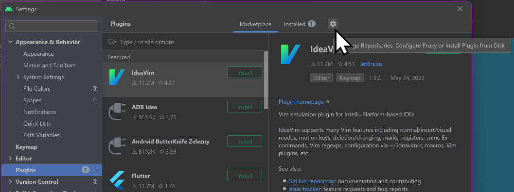
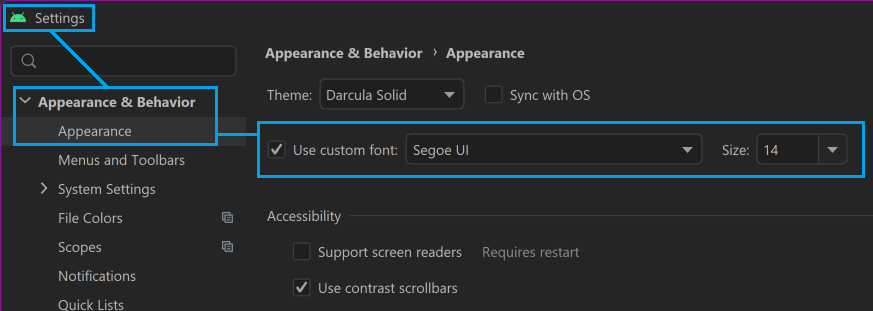

Android Studio - Dark Mode
The "standard" dark mode that Android Studio uses has very low contrast. It's called "Darcula" but it's not the same as other software I've seen with a "Darcula" theme.
There is a built in "High contrast" mode, but it seems to have bad pixelation and is really too far in the other direction.
So I went to:
https://plugins.jetbrains.com/plugin/13920-darcula-solid-theme/versions and found a theme I preferred — darcula-solid. You download it, it's a jar file.
- In Android Studio, open the Settings dialog (in the File menu) (also available by pressing
CtrlAltS) - Select Plugins in the tree view on the left
- Click the gear icon ⚙️ on the top of the dialog (see image) 
- Choose
Install Pluginfrom Disk. - Locate the
.jarfile you downloaded. - Click
OKto apply the changes and restart your IDE if prompted.
Adust font size in Android Studio
To save my eyes (you generally only get the one pair) I also made the font size bigger.
This is under Settings (in the File menu) (also available by pressing Ctrl Alt S) — Appearance & Behavior — Appearance. (See image)
